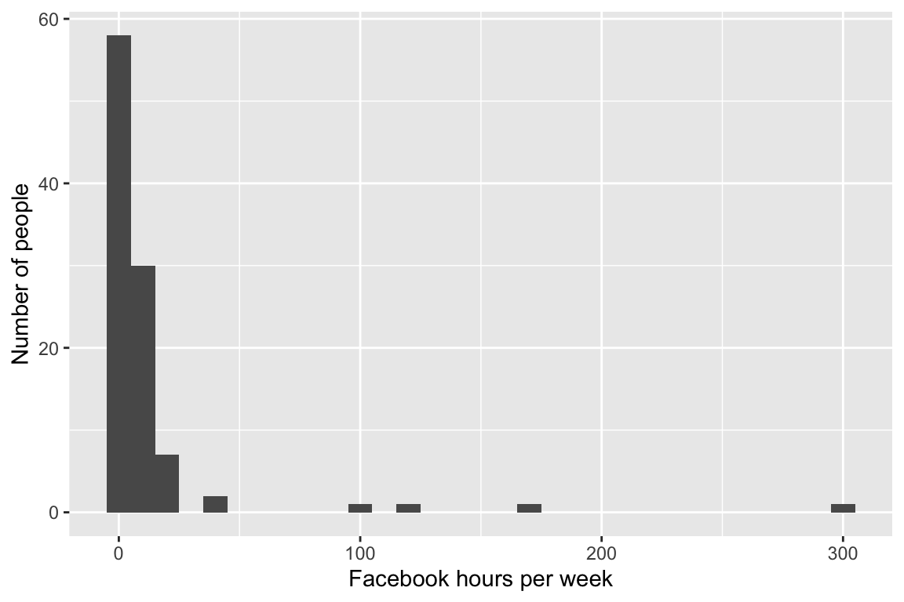

Introduction and set up
Enter the link into your web browser : http://bit.ly/MonashBA_R2
Go down to
Workshop Contents, then clickData Wrangling 2to open the material of workshop
The helpers for today are:
Amy Tran
Jefanny Suryawan
Jiaying Wu (Raymond)
Sao Yang Hew
Weihao Li
Yuru Sun (Christina)
Yih Ting Eng
What are missing values?
Missing data occurs when certain values are missing in a dataset
In R, missing values are indicated by ‘NA’
Missing values are essential to deal with as misleading results can be obtained if they are ignored
There are several reasons as to why there may be missing values in dataset. For example:
Manual data entry procedures
Incorrect measurements
Equipment errors
Visualising Missing Data 
Types of missing data
library(visdat)
vis_dat(survey)This type of plot is called a “heatmap”, displays the data table, with cells coloured according to some other information. In this case it is type of variable, and missingness status.
Most of the variables are
character(text) variables and we can see that there is onenumericvariables and onelogicalvariable.
Using vis_miss()
vis_miss(survey)- This type of plot exclusively tells us what values are missing and not
naniar
naniar is an important package which can summarise, visualise and manipulate missing data.
It provides us with:
a tidy structure for missing data
shorthand and numerical summaries of missing data
visualisation of missing data
Summarise missing data
library(naniar)
miss_summary(survey)miss_df_prop- The proportion of missingsmiss_var_prop- The proportion of variables with a missingmiss_case_prop- The proportion of cases with \(k\) missings
Extend ploting missing data in ggplot2
ggplot gives us a warning if there are missing values.
ggplot(survey_tidy,aes(x = uni_year, y = hours_facebook)) +
geom_boxplot() +
theme(aspect.ratio=1) +
labs(x = "Uni Year", y = "Hours on Facebook")
## Warning: Removed 2 rows containing non-finite values (stat_boxplot).geom_miss_point to display the missing data.
ggplot(survey_tidy, aes(x = uni_year,y = hours_facebook)) +
geom_miss_point() +
theme(aspect.ratio=1) +
labs(x = "Uni Year", y = "Hours on Facebook")
Your turn!
Load the ‘rentals’ dataset
Create a heatmap to identify the proportion of character and integer variables
Make a vismiss plot and summarise the missing data
Let’s Review
Workshop 1 - Introduction to R and RStudio
Credit to R memes for Statistical Fiends reddit page
Learnt about what is R and R studio and the benefits of learning R
Learnt how to create a project and what a working directory is
Learnt what R can do e.g. calc, creating objects, calling functions
# Calculations
sin(pi / 6)
## [1] 0.5
exp(2)
## [1] 7.389056
log(1)
## [1] 0
#Create objects with
a <- 9 * 7
4 * 8 -> b
c <- 128/2
Vector <- c(a,b,c)
mean(Vector)
## [1] 53
sd(Vector)
## [1] 18.19341- Learnt how to install and use packages and the help function
# CRAN most common method
install.packages("naniar")
library(naniar)Workshop 2 - Introduction to R Markdown
Learnt the format of an RMD file which includes…
- YAML header
---
title: "Workshop 6"
author: "R is cool""
date: "13/09/2019"
output: html_document
---Code Chunks
Where R code is typed into
Shortcut for Win
Control + Alt + IShortcut for Mac
Cmnd + Option + IThe benefit of an RMD file is that it can be knitted into many different filte types i.e. HTML file, Word doc, PDF, presentation, web app etc.
Learnt how to add extra features such as heading, lists, creating different types of text
Workshop 3 - Data Visualisation

Credit to R memes for Statistical Fiends reddit page
In Workshop 3 an introduction to data visualisation with the use of the ggplot function
The basic framework is..
library(ggplot2)
ggplot(data = ???, aes(x = ???, y= ???)) +
geom_???()Histogram
ggplot(data = survey_tidy, aes(x = hours_facebook)) +
geom_histogram(binwidth=10) +
xlab("Facebook hours per week") +
ylab("Number of people")
Barchart
ggplot(data = survey_tidy, aes(x = uni_year)) +
geom_bar() +
xlab("Year Level") +
ylab("Number of people") +
ggtitle("What year of uni are you in?")
Boxplot
ggplot(data = survey_tidy, aes(x = degree_type, y = hours_facebook)) +
geom_boxplot() Scatterplot
library(gapminder)
ggplot(data = gapminder, aes(x = year, y= lifeExp, col= continent)) +
geom_point()gapminder %>%
filter(continent == "Oceania") %>%
ggplot(aes(x=year,y=lifeExp, colour = country, size = pop)) +
geom_point()If you’re interested in this dataset have a look at [Hans Rosling’s 200 Countries, 200 Years, 4 Minutes] (https://www.youtube.com/watch?v=jbkSRLYSojo)
Workshop 4 - Data Types and Import Data
In Workshop 4 we learnt how to import and export different formats of data in R
We did this with the readr, readxl and haven packages in R
readr

readxl

haven

Some of the functions we used in that workshop were:
readxl
read_xls() for reading xls files
read_xlsx() reading xlsx files
readr
read_csv() for reading csv files
read_tsv() for reading tab seperated data
read_fwf() for fixed width text files
For example, this is an example of what raw csv data looks in a text editor
And this is what it looks like in R
library(readr)
rock <- read_csv("data/rock.csv")
rockWe can do the same for an xlsx file
library(readxl)
mortality <- read_xlsx("data/mortality.xlsx")
mortalityThe Haven package allows us to read in datafiles from other statistical software like SAS, SPSS and STATA
Workshop 5 - Data Wrangling
Credit to R memes for Statistical Fiends reddit page
Last week, in workshop 5 we learnt about data wrangling on the survey data. This is a key skill for analysts as most data in the real world doesn’t come in the correct format.
Mitch showed us two important packages
dplyr
tidyr
The goal of tidyr is to reshape your data into tidy format.
Each variable is in a column.
Each observation is a row.
Each value is a cell.
The 4 functions in tidyr that we utlised were:
For example;
spread()
# devtools::install_github("garrettgman/DSR")
library(DSR)
library(tidyr)
library(dplyr)table2table2_tidy <- spread(table2, type, count)
table2_tidygather()
DSR::table4gather(DSR::table4, "year","cases", 2:3)
The functions we learnt about in dpylr:
Here’s a quick example showing how a few of these functions work:
table2_tidy %>%
rename(pop = population) %>%
mutate(cases_per_cap = cases/pop) %>%
filter(year == 1999) %>%
arrange(cases_per_cap) Your Turn!
- Load the data into R
read_csv()
- Explore the data
glimpse()
Tidy the data with
dplyrandtidyrHandle missing values
naniarCreate plots to understand the dataset
ggplot()
- Knit the Rmd file into Html